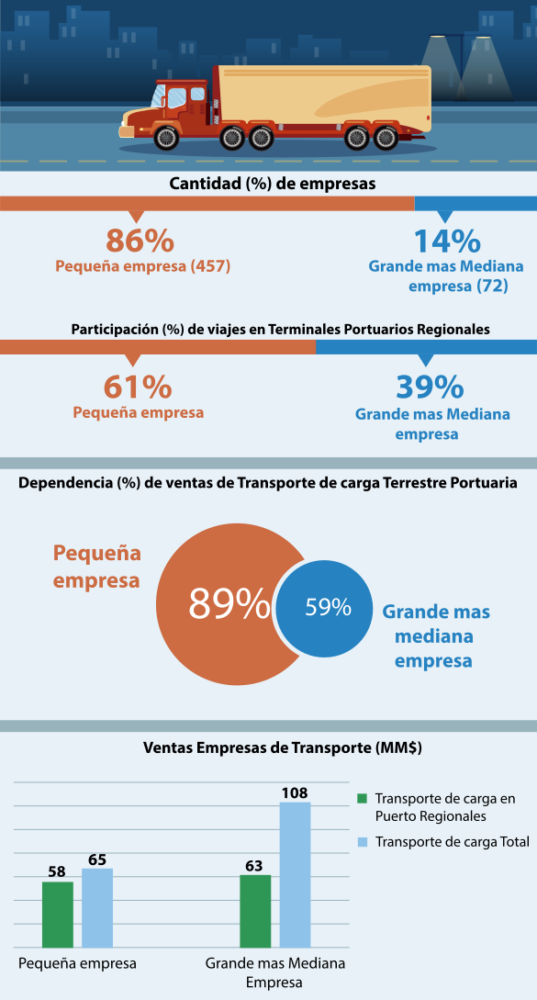
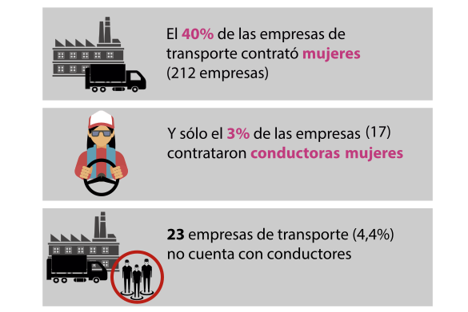
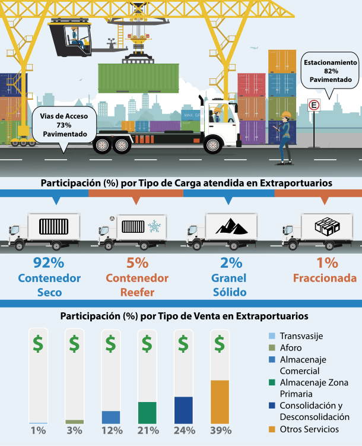

Desglose
Introducción
En Junio de 2016, se firma un convenio entre la Subsecretaría de Transportes y el Instituto Nacional de Estadísticas Región de Valparaíso para ejecutar el proyecto de caracterización portuaria. El proyecto tuvo como objetivo caracterizar y evaluar la logística portuaria de la Región, obteniendo una primera línea base. Su ejecución se dio entre Octubre y Diciembre de 2016, tomando como período de referencia el año 2015. Sus principales resultados han sido consolidados en este análisis.
Empresas de carga terrestre
Ubicación de empresas de transporte de carga terrestre portuaria
Caracterización de empresas de transporte

Caracterización de trabajadores

Terminales Portuarios
Participación por tipo de carga, medio de transporte y flujo total movilizado
Número de horas promedio de ocupación por nave en terminales portuarios

Caracterización de trabajadores
Almacenes
Caracterización de almacenes
Caracterización de trabajadores
Caracterización de almacenes extraportuarios
